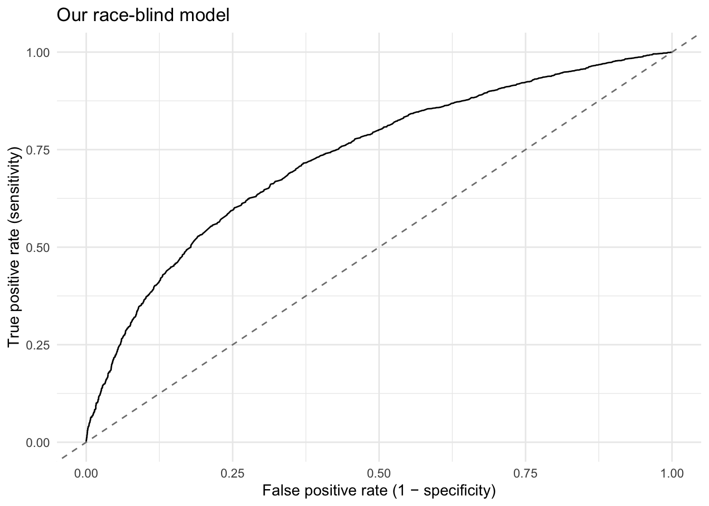
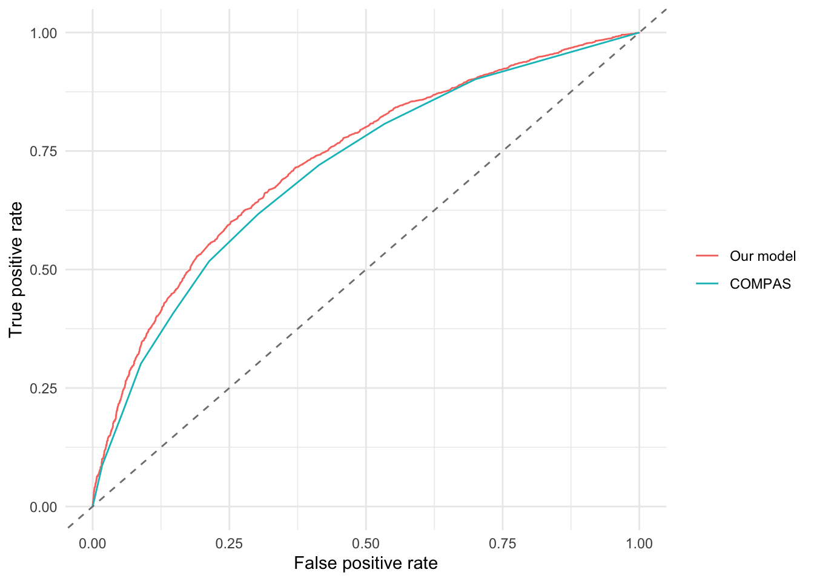

library(tidyverse)
library(pROC) # for ROC curves and AUC. Install once with install.packages("pROC")Week 11 Lab: Is the Model Race-Blind?
A guided, worked example: logistic regression from start to finish
How to use this lab
This lab is ungraded. It walks through everything from the last two weeks, one step at a time, on real data.
- Type the code. Don’t copy and paste it. Typing makes you read every word.
- Each step says what we’re doing and why.
- Checkpoints give the numbers you should get. If yours don’t match, stop and fix it before moving on.
- A5 asks you to do all of this again on new data, with much less help. Anything you understand here, you’ll be able to do there.
Step 0: Packages
Step 1: Load the data
This is the file ProPublica used in its 2016 investigation of COMPAS, a risk score used in court in Broward County, Florida. Each row is a person who was scored by COMPAS. The outcome column two_year_recid is 1 if they were rearrested within two years and 0 if they weren’t.
url <- "https://raw.githubusercontent.com/propublica/compas-analysis/master/compas-scores-two-years.csv"
compas_raw <- read_csv(url, name_repair = make.unique)Why name_repair = make.unique? The file has two columns named priors_count and two named decile_score. The copies are identical. This keeps the first one under its normal name and renames the copy (priors_count.1), so priors_count works the way you’d expect.
glimpse(compas_raw)Rows: 7,214
Columns: 53
$ id <dbl> 1, 3, 4, 5, 6, 7, 8, 9, 10, 13, 14, 15, 16, 18…
$ name <chr> "miguel hernandez", "kevon dixon", "ed philo",…
$ first <chr> "miguel", "kevon", "ed", "marcu", "bouthy", "m…
$ last <chr> "hernandez", "dixon", "philo", "brown", "pierr…
$ compas_screening_date <date> 2013-08-14, 2013-01-27, 2013-04-14, 2013-01-1…
$ sex <chr> "Male", "Male", "Male", "Male", "Male", "Male"…
$ dob <date> 1947-04-18, 1982-01-22, 1991-05-14, 1993-01-2…
$ age <dbl> 69, 34, 24, 23, 43, 44, 41, 43, 39, 21, 27, 23…
$ age_cat <chr> "Greater than 45", "25 - 45", "Less than 25", …
$ race <chr> "Other", "African-American", "African-American…
$ juv_fel_count <dbl> 0, 0, 0, 0, 0, 0, 0, 0, 0, 0, 0, 0, 0, 0, 0, 0…
$ decile_score <dbl> 1, 3, 4, 8, 1, 1, 6, 4, 1, 3, 4, 6, 1, 4, 1, 3…
$ juv_misd_count <dbl> 0, 0, 0, 1, 0, 0, 0, 0, 0, 0, 0, 0, 0, 0, 0, 0…
$ juv_other_count <dbl> 0, 0, 1, 0, 0, 0, 0, 0, 0, 0, 0, 0, 0, 0, 0, 0…
$ priors_count <dbl> 0, 0, 4, 1, 2, 0, 14, 3, 0, 1, 0, 3, 0, 0, 1, …
$ days_b_screening_arrest <dbl> -1, -1, -1, NA, NA, 0, -1, -1, -1, 428, -1, 0,…
$ c_jail_in <dttm> 2013-08-13 06:03:42, 2013-01-26 03:45:27, 201…
$ c_jail_out <dttm> 2013-08-14 05:41:20, 2013-02-05 05:36:53, 201…
$ c_case_number <chr> "13011352CF10A", "13001275CF10A", "13005330CF1…
$ c_offense_date <date> 2013-08-13, 2013-01-26, 2013-04-13, 2013-01-1…
$ c_arrest_date <date> NA, NA, NA, NA, 2013-01-09, NA, NA, 2013-08-2…
$ c_days_from_compas <dbl> 1, 1, 1, 1, 76, 0, 1, 1, 1, 308, 1, 0, 0, 1, 4…
$ c_charge_degree <chr> "F", "F", "F", "F", "F", "M", "F", "F", "M", "…
$ c_charge_desc <chr> "Aggravated Assault w/Firearm", "Felony Batter…
$ is_recid <dbl> 0, 1, 1, 0, 0, 0, 1, 0, 0, 1, 0, 1, 0, 0, 1, 1…
$ r_case_number <chr> NA, "13009779CF10A", "13011511MM10A", NA, NA, …
$ r_charge_degree <chr> NA, "(F3)", "(M1)", NA, NA, NA, "(F2)", NA, NA…
$ r_days_from_arrest <dbl> NA, NA, 0, NA, NA, NA, 0, NA, NA, 0, NA, NA, N…
$ r_offense_date <date> NA, 2013-07-05, 2013-06-16, NA, NA, NA, 2014-…
$ r_charge_desc <chr> NA, "Felony Battery (Dom Strang)", "Driving Un…
$ r_jail_in <date> NA, NA, 2013-06-16, NA, NA, NA, 2014-03-31, N…
$ r_jail_out <date> NA, NA, 2013-06-16, NA, NA, NA, 2014-04-18, N…
$ violent_recid <lgl> NA, NA, NA, NA, NA, NA, NA, NA, NA, NA, NA, NA…
$ is_violent_recid <dbl> 0, 1, 0, 0, 0, 0, 0, 0, 0, 1, 0, 0, 0, 0, 0, 0…
$ vr_case_number <chr> NA, "13009779CF10A", NA, NA, NA, NA, NA, NA, N…
$ vr_charge_degree <chr> NA, "(F3)", NA, NA, NA, NA, NA, NA, NA, "(F2)"…
$ vr_offense_date <date> NA, 2013-07-05, NA, NA, NA, NA, NA, NA, NA, 2…
$ vr_charge_desc <chr> NA, "Felony Battery (Dom Strang)", NA, NA, NA,…
$ type_of_assessment <chr> "Risk of Recidivism", "Risk of Recidivism", "R…
$ decile_score.1 <dbl> 1, 3, 4, 8, 1, 1, 6, 4, 1, 3, 4, 6, 1, 4, 1, 3…
$ score_text <chr> "Low", "Low", "Low", "High", "Low", "Low", "Me…
$ screening_date <date> 2013-08-14, 2013-01-27, 2013-04-14, 2013-01-1…
$ v_type_of_assessment <chr> "Risk of Violence", "Risk of Violence", "Risk …
$ v_decile_score <dbl> 1, 1, 3, 6, 1, 1, 2, 3, 1, 5, 4, 4, 1, 2, 1, 2…
$ v_score_text <chr> "Low", "Low", "Low", "Medium", "Low", "Low", "…
$ v_screening_date <date> 2013-08-14, 2013-01-27, 2013-04-14, 2013-01-1…
$ in_custody <date> 2014-07-07, 2013-01-26, 2013-06-16, NA, NA, 2…
$ out_custody <date> 2014-07-14, 2013-02-05, 2013-06-16, NA, NA, 2…
$ priors_count.1 <dbl> 0, 0, 4, 1, 2, 0, 14, 3, 0, 1, 0, 3, 0, 0, 1, …
$ start <dbl> 0, 9, 0, 0, 0, 1, 5, 0, 2, 0, 0, 4, 1, 0, 0, 0…
$ end <dbl> 327, 159, 63, 1174, 1102, 853, 40, 265, 747, 4…
$ event <dbl> 0, 1, 0, 0, 0, 0, 1, 0, 0, 1, 0, 1, 0, 0, 1, 1…
$ two_year_recid <dbl> 0, 1, 1, 0, 0, 0, 1, 0, 0, 1, 0, 1, 0, 0, 1, 1…Step 2: Clean it
We use the same filters ProPublica used, so our numbers line up with theirs:
days_b_screening_arrestbetween −30 and 30: the COMPAS screening happened close to the arrest it was about.is_recid != -1: drop rows where the outcome couldn’t be determined.c_charge_degree != "O": drop ordinary traffic offenses.score_text != "N/A": drop people without a COMPAS score.
Then we make the variables the model needs.
compas <- compas_raw %>%
filter(days_b_screening_arrest >= -30,
days_b_screening_arrest <= 30,
is_recid != -1,
c_charge_degree != "O",
score_text != "N/A") %>%
mutate(
male = as.integer(sex == "Male"),
felony = as.integer(c_charge_degree == "F"),
juv_total = juv_fel_count + juv_misd_count + juv_other_count
)
nrow(compas)[1] 6172mean(compas$two_year_recid)[1] 0.4551199
TipCheckpoint 1
6,172 people. 0.455, so about 46% were rearrested within two years.
Step 3: Fit the model
family = binomial tells R the outcome is 0/1.
recid_fit <- glm(two_year_recid ~ age + priors_count + male + felony + juv_total,
family = binomial,
data = compas)
summary(recid_fit)
Call:
glm(formula = two_year_recid ~ age + priors_count + male + felony +
juv_total, family = binomial, data = compas)
Coefficients:
Estimate Std. Error z value Pr(>|z|)
(Intercept) 0.362734 0.115744 3.134 0.00172 **
age -0.043642 0.002719 -16.053 < 2e-16 ***
priors_count 0.160072 0.008025 19.946 < 2e-16 ***
male 0.327924 0.071919 4.560 5.13e-06 ***
felony 0.229233 0.058793 3.899 9.66e-05 ***
juv_total 0.135149 0.042938 3.147 0.00165 **
---
Signif. codes: 0 '***' 0.001 '**' 0.01 '*' 0.05 '.' 0.1 ' ' 1
(Dispersion parameter for binomial family taken to be 1)
Null deviance: 8506.4 on 6171 degrees of freedom
Residual deviance: 7520.2 on 6166 degrees of freedom
AIC: 7532.2
Number of Fisher Scoring iterations: 4The numbers in the Estimate column are on the log-odds scale. Nobody thinks in log-odds, so turn them into odds ratios:
exp(coef(recid_fit)) (Intercept) age priors_count male felony juv_total
1.4372534 0.9572963 1.1735955 1.3880829 1.2576348 1.1447068
TipCheckpoint 2
| term | estimate (log-odds) | odds ratio |
|---|---|---|
| age | −0.044 | 0.96 |
| priors_count | 0.160 | 1.17 |
| male | 0.328 | 1.39 |
| felony | 0.229 | 1.26 |
| juv_total | 0.135 | 1.14 |
Reading them. Every odds ratio is a comparison, with everything else in the model held the same:
- priors_count, 1.17: compared to someone with one fewer prior, the odds of rearrest are 17% higher.
- age, 0.96: compared to someone one year younger, the odds are 4% lower.
- male, 1.39: compared to a woman with the same age, priors, charge and juvenile record, the odds are 39% higher.
Write it yourself: read the
felonyodds ratio in one sentence. Start with “Compared to…”
NoteMy answer
felony, 1.26: Compared to someone charged with a misdemeanor who has the same age, sex, number of priors and juvenile record, a person charged with a felony has about 26% higher odds of being rearrested within two years.
Step 4: Predict probabilities
compas <- compas %>%
mutate(pred = predict(recid_fit, type = "response"))
compas %>%
select(age, priors_count, male, felony, two_year_recid, pred) %>%
head(10)# A tibble: 10 × 6
age priors_count male felony two_year_recid pred
<dbl> <dbl> <int> <int> <dbl> <dbl>
1 69 0 1 1 0 0.110
2 34 0 1 1 1 0.363
3 24 4 1 1 1 0.657
4 44 0 1 0 0 0.226
5 41 14 1 1 1 0.798
6 43 3 1 1 0 0.383
7 39 0 0 0 0 0.208
8 27 0 1 1 0 0.436
9 23 3 1 0 1 0.542
10 37 0 0 0 0 0.222Every person now has a probability between 0 and 1. Now we need to choose our threshold to assign everyone a 0 or a 1.
Step 5: Pick a cutoff, build a confusion matrix
Flag anyone with a predicted probability at or above 0.5 as “high risk.”
compas <- compas %>%
mutate(flag = as.integer(pred >= 0.5))
table(predicted = compas$flag, actual = compas$two_year_recid) actual
predicted 0 1
0 2650 1258
1 713 1551This is the confusion matrix:
- flag 1, actual 1: true positives. Flagged and rearrested.
- flag 1, actual 0: false positives. Flagged, not rearrested.
- flag 0, actual 1: false negatives. Not flagged, was rearrested.
- flag 0, actual 0: true negatives. Not flagged, not rearrested.
Now the summary rates:
compas %>%
summarize(
sensitivity = sum(flag == 1 & two_year_recid == 1) / sum(two_year_recid == 1),
specificity = sum(flag == 0 & two_year_recid == 0) / sum(two_year_recid == 0),
accuracy = mean(flag == two_year_recid)
)# A tibble: 1 × 3
sensitivity specificity accuracy
<dbl> <dbl> <dbl>
1 0.552 0.788 0.681
TipCheckpoint 3
Confusion matrix: TP = 1,551, FP = 713, FN = 1,258, TN = 2,650. Sensitivity 0.55, specificity 0.79, accuracy 0.68.
Try other cutoffs
Rather than retyping all that for every cutoff, write a small function. It takes the data and a threshold, and returns the rates.
rates_at <- function(data, threshold) {
data %>%
mutate(flag = as.integer(pred >= threshold)) %>%
summarize(
threshold = threshold,
sensitivity = sum(flag == 1 & two_year_recid == 1) / sum(two_year_recid == 1),
specificity = sum(flag == 0 & two_year_recid == 0) / sum(two_year_recid == 0),
accuracy = mean(flag == two_year_recid)
)
}
bind_rows(
rates_at(compas, 0.3),
rates_at(compas, 0.5),
rates_at(compas, 0.7)
)# A tibble: 3 × 4
threshold sensitivity specificity accuracy
<dbl> <dbl> <dbl> <dbl>
1 0.3 0.900 0.311 0.579
2 0.5 0.552 0.788 0.681
3 0.7 0.200 0.956 0.612
TipCheckpoint 4
| threshold | sensitivity | specificity |
|---|---|---|
| 0.3 | 0.90 | 0.31 |
| 0.5 | 0.55 | 0.79 |
| 0.7 | 0.20 | 0.96 |
Same pattern as the quarantine cards: lower the cutoff and you catch more people, and you also flag more people who weren’t rearrested.
Step 6: Every cutoff at once, with ROC and AUC
roc_obj <- roc(compas$two_year_recid, compas$pred)
auc(roc_obj)Area under the curve: 0.7304ggroc(roc_obj, legacy.axes = TRUE) +
geom_abline(linetype = "dashed", color = "grey50") +
labs(x = "False positive rate (1 − specificity)",
y = "True positive rate (sensitivity)",
title = "Our race-blind model") +
theme_minimal()
Why legacy.axes = TRUE? Without it, ggroc() puts specificity on a backwards x-axis. Same curve, confusing labels.
How does it compare to COMPAS?
The file includes COMPAS’s own score, decile_score (1 to 10). It’s a ranking, so we can draw its ROC curve too.
roc_compas <- roc(compas$two_year_recid, compas$decile_score)
auc(roc_compas)Area under the curve: 0.7098ggroc(list(`Our model` = roc_obj, `COMPAS` = roc_compas), legacy.axes = TRUE) +
geom_abline(linetype = "dashed", color = "grey50") +
labs(x = "False positive rate", y = "True positive rate", color = NULL) +
theme_minimal()
TipCheckpoint 5
Our model: AUC 0.73. COMPAS: AUC 0.71.
Your five-variable model ranks people about as well as the commercial tool.
Step 7: Who gets the errors?
The question from last week: we left race out, so is the model race-blind?
Same model, same cutoff (0.5). Compute the error rates separately for Black and white defendants.
- False positive rate: of the people not rearrested, what share did we flag high risk?
- False negative rate: of the people who were rearrested, what share did we flag low risk?
compas %>%
filter(race %in% c("African-American", "Caucasian")) %>%
mutate(flag = as.integer(pred >= 0.5)) %>%
group_by(race) %>%
summarize(
n = n(),
base_rate = mean(two_year_recid),
fpr = sum(flag == 1 & two_year_recid == 0) / sum(two_year_recid == 0),
fnr = sum(flag == 0 & two_year_recid == 1) / sum(two_year_recid == 1),
accuracy = mean(flag == two_year_recid)
)# A tibble: 2 × 6
race n base_rate fpr fnr accuracy
<chr> <int> <dbl> <dbl> <dbl> <dbl>
1 African-American 3175 0.523 0.295 0.344 0.680
2 Caucasian 2103 0.391 0.141 0.603 0.679
TipCheckpoint 6
| n | base rate | FPR | FNR | accuracy | |
|---|---|---|---|---|---|
| African-American | 3,175 | 0.52 | 0.29 | 0.34 | 0.68 |
| Caucasian | 2,103 | 0.39 | 0.14 | 0.60 | 0.68 |
NoteWhat this shows
Accuracy is the same for both groups (0.68), but the errors fall differently. A Black defendant who was not rearrested is about twice as likely to be flagged high risk as a white defendant who was not rearrested (29% vs. 14%). A white defendant who was rearrested is much more likely to be labeled low risk (60% vs. 34% FNR). So leaving race out of the model did not make it race-blind in its outcomes.
Step 8: How did race get in?
Race isn’t in the model. Look at what is in the model:
compas %>%
filter(race %in% c("African-American", "Caucasian")) %>%
group_by(race) %>%
summarize(
mean_priors = mean(priors_count),
mean_age = mean(age)
)# A tibble: 2 × 3
race mean_priors mean_age
<chr> <dbl> <dbl>
1 African-American 4.24 32.4
2 Caucasian 2.29 37.5
TipCheckpoint 7
African-American: priors 4.2, age 32. Caucasian: priors 2.3, age 38.
Priors are past arrests. Arrests depend on where police patrol and who they stop.
An experiment: put race back in
If leaving race out made the model fair, putting it back in should make things much worse. Does it?
compas <- compas %>%
mutate(black = as.integer(race == "African-American"))
fit_race <- glm(two_year_recid ~ age + priors_count + male + felony + juv_total + black,
family = binomial, data = compas)
compas <- compas %>%
mutate(pred_race = predict(fit_race, type = "response"))
auc(roc(compas$two_year_recid, compas$pred_race))Area under the curve: 0.7302compas %>%
filter(race %in% c("African-American", "Caucasian")) %>%
mutate(flag = as.integer(pred_race >= 0.5)) %>%
group_by(race) %>%
summarize(fpr = sum(flag == 1 & two_year_recid == 0) / sum(two_year_recid == 0))# A tibble: 2 × 2
race fpr
<chr> <dbl>
1 African-American 0.329
2 Caucasian 0.117
TipCheckpoint 8
AUC stays at 0.73. FPR: 0.33 for Black defendants, 0.12 for white defendants. The gap gets slightly wider, but not by much.
Leaving race out bought very little, because priors and age were already carrying it.
✏️ Try it yourself: refit the race-blind model without
priors_count. Does the gap close? What happens to the AUC? (You should see about 0.65, with FPR 0.31 vs. 0.21.)
fit_nopriors <- glm(two_year_recid ~ age + male + felony + juv_total,
family = binomial, data = compas)
exp(coef(fit_nopriors))(Intercept) age male felony juv_total
1.0651227 0.9721125 1.5702725 1.5062589 1.4866685 compas <- compas %>%
mutate(pred_nopriors = predict(fit_nopriors, type = "response"))
auc(roc(compas$two_year_recid, compas$pred_nopriors))Area under the curve: 0.6525compas %>%
filter(race %in% c("African-American", "Caucasian")) %>%
mutate(flag = as.integer(pred_nopriors >= 0.5)) %>%
group_by(race) %>%
summarize(
fpr = sum(flag == 1 & two_year_recid == 0) / sum(two_year_recid == 0),
fnr = sum(flag == 0 & two_year_recid == 1) / sum(two_year_recid == 1),
accuracy = mean(flag == two_year_recid)
)# A tibble: 2 × 4
race fpr fnr accuracy
<chr> <dbl> <dbl> <dbl>
1 African-American 0.313 0.464 0.608
2 Caucasian 0.206 0.656 0.618
NoteMy answer
Dropping priors_count narrows the FPR gap from 0.29 vs. 0.14 (about 15 points) to 0.31 vs. 0.21 (about 10 points), but it does not close it. Age and juvenile record differ by race too, so they still carry some of the race signal. And the cost is real: AUC falls from 0.73 to 0.65, accuracy drops to about 0.61 for both groups, and the remaining variables (felony, juv_total, male) take on larger odds ratios to make up for the missing priors.
So there is a trade-off: the single most predictive variable is also the one that carries the most race information, because past arrests reflect where police patrol and who they stop. Removing it buys some fairness in error rates at a large cost in accuracy, and still leaves a gap.
Step 9: Is the model calibrated?
Group people by their predicted probability. Within each group, what share were actually rearrested, by race?
compas %>%
filter(race %in% c("African-American", "Caucasian")) %>%
mutate(pred_bin = cut(pred, breaks = c(0, .3, .4, .5, .6, .7, 1), right = FALSE)) %>%
group_by(pred_bin, race) %>%
summarize(n = n(), actual_rate = mean(two_year_recid), .groups = "drop") %>%
select(-n) %>%
pivot_wider(names_from = race, values_from = actual_rate)# A tibble: 6 × 3
pred_bin `African-American` Caucasian
<fct> <dbl> <dbl>
1 [0,0.3) 0.237 0.213
2 [0.3,0.4) 0.309 0.344
3 [0.4,0.5) 0.435 0.423
4 [0.5,0.6) 0.612 0.547
5 [0.6,0.7) 0.733 0.76
6 [0.7,1) 0.809 0.741
TipCheckpoint 9
For the middle bins, the two columns are close. For example, [0.4, 0.5) is 0.44 vs. 0.42, and [0.6, 0.7) is 0.73 vs. 0.76.
The same predicted probability means about the same chance of rearrest for both groups. And the error rates in Step 7 were very different.
NoteTakeaways
- Leaving race out is not the same as being fair. Priors and age are correlated with race, so the race-blind model still gives Black defendants about twice the false positive rate of white defendants.
- Calibration and equal error rates can’t both hold here. The model is roughly calibrated for both groups (Step 9), but because the base rates differ (0.52 vs. 0.39), a calibrated score must flag more Black defendants, which pushes up their FPR, while flagging fewer white defendants pushes up the white FNR. When base rates differ, you can’t satisfy both fairness definitions at once; choosing between them is a policy decision, not a technical one.
- The data carries the history.
priors_countis the strongest predictor and also the clearest channel for race, because arrest records reflect policing patterns, not just behavior.
ok now go forth and do the assignment!